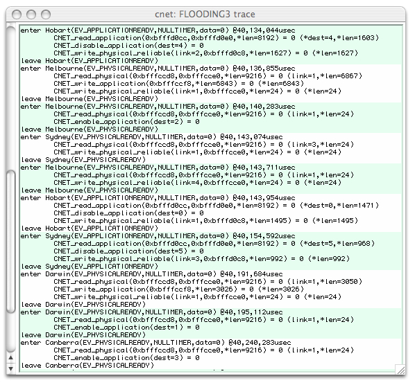

|

|
Tracing cnet's executionThe development and debugging of network protocols is a difficult task. Without the support of a development environment, the development of even a two-node protocol requires access to both nodes and, possibly, the physical communication medium. This is, of course, one of the primary reasons that we use network simulators, such as cnet. We have the ability to "peek" inside each network node, and even the communication links, to see what is happening and to, hopefully, expose errors in our protocols.Although cnet permits protocols to be written in C and executed natively in a single operating system process, it does not provide traditional debugging support. Moreover (unfortunately) because of the way cnet manipulates the single process's data segments to transparently schedule nodes, standard debuggers, such as gdb, can't "keep up" with what is happening and begin reporting incorrect information. cnet aids the development and debugging of network protocols with a minimum of intrusion. cnet enables the delivery and execution of events and cnet's own functions to be traced. Each event's commencement and termination, and each function's invocation, parameters, and return value annotated. The picture below shows a cnet simulation which was commenced with the -t option to enable tracing.  The displayed first line of the trace, above, indicates that the handler for the EV_APPLICATIONREADY event for the node Hobart is being invoked at time 40,134,044usecs. Four lines later, execution leaves the same handler. While executing the handler, three of cnet's standard functions were invoked. The first of these (line 2) was CNET_read_application. On invocation the first two parameters are addresses (such as requested with C's & operator) to receive the destination address and actual contents of the next message. These addresses are printed as hexadecimal values because no interpretation can be placed on their initial contents, nor the memory to which these addresses refer. In reality, the third parameter is also passed by address, but we know that it represents the maximum possible length of the second parameter (to receive the new message), so we are able to report that the maximum length "provided" on entry to the function was 8192. The return value of CNET_read_application was 0, indicating success, and the side-effects of the function, modifying the destination address and length of the new message are also reported with the new values of 4 and 1603 respectively. If an error had been detected, the trace would indicate a return value of -1 together with the new value of the CnetError type in cnet_errno. Note that due to cnet's event driven programming style, that events do not interrupt or preempt one another. The trace stream will always show what is being executed with only one level of indentation. With reference to the this screenshot, we can see that the next event for Melbourne, at 40,136,855usecs, was a frame arriving on the Physical Layer's link 1. In response to this frame arrival, Melbourne has written 6843 bytes to its own Application Layer (probably after removing one or more headers from the just arrived frame), and has then transmitted a short 24 bytes frame, also on link 1. Such a short frame, and the use of link 1 again, suggests that this is an acknowledgment frame being sent to the Data Link Layer of the node on the other end of this link. The tracing of function parameters using only their hexadecimal addresses is error-prone and confusing. Moreover, different local variables in different event handlers will have the same hexadecimal addresses (as they'll be on the function's runtime stack), leading to more confusion. Additional cnet API calls may be added to the protocol's code, such as:
to request that the strings "dest" and "newmessage" be printed whenever the addresses of the variables destaddr and lastmsg would otherwise be printed in hexadecimal. Calls to CNET_trace_name should be placed near the entry of each event handler, and obviously before an address is to be traced. The CNET_trace_name function is not, itself, traced. By default, a copy of cnet's trace stream appears in the trace-window when cnet is invoked with the -t option. Alternatively, tracing may be toggled using the windowing interface, by selecting a checkbox to change the default or specific node's attributes. When executing without the Tcl/Tk interface, the trace stream appears via cnet's standard error stream. The complete trace stream may also be mirrored to a named file by setting the tracefile global attribute. From within the C code of a protocol it is possible to trace only certain events, possibly for only certain nodes of interest. For example, a call such as CNET_set_trace(TE_APPLICATIONREADY) will trace just the EV_APPLICATIONREADY event for the invoking node. The parameter to CNET_set_trace is really a bitmap of events of interest, and so we may add or remove particular events using C's bitwise operators:
All required TE_* constants are defined in cnet's header file, along with the useful TE_ALLEVENTS and TE_NOEVENTS. During the execution of an event handler that is being traced, an arbitrary string may also be displayed with CNET_trace function, which accepts a standard C printf format specification. |
cnet v3.3.1, written by Chris.McDonald@uwa.edu.au
Last modified: Thu Apr 10 4:35PM 2014